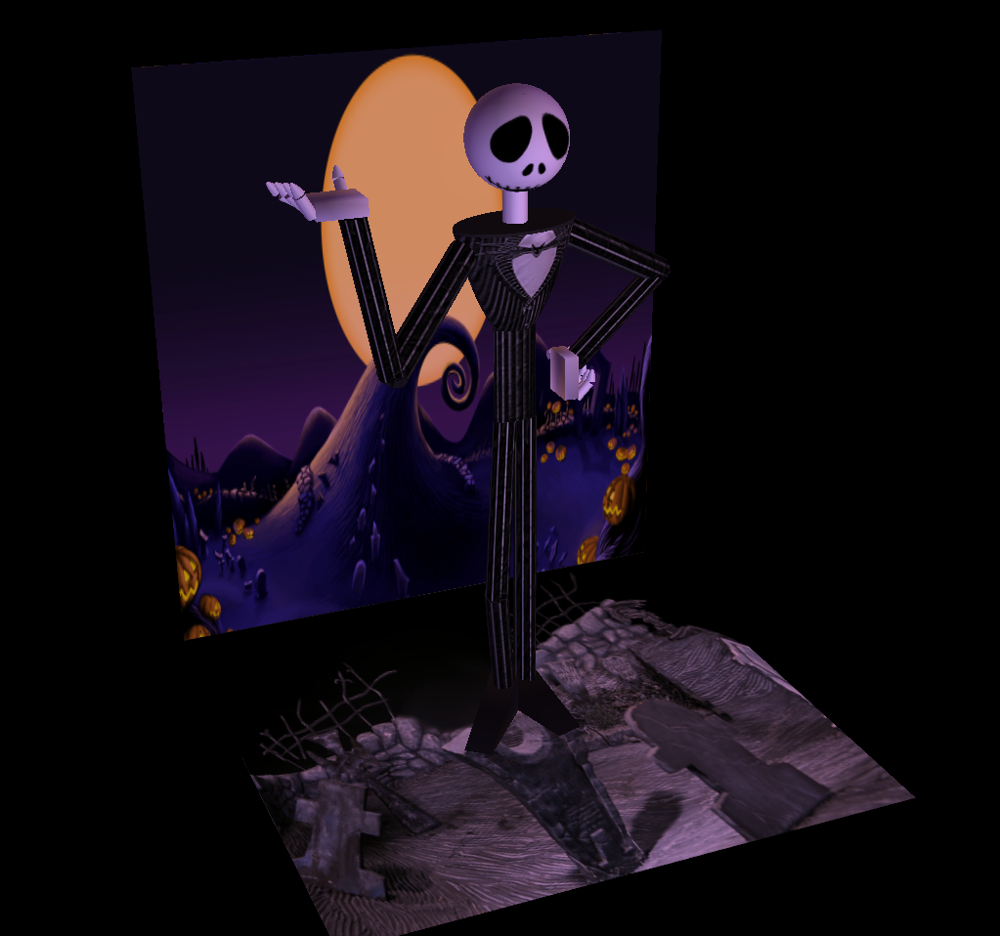
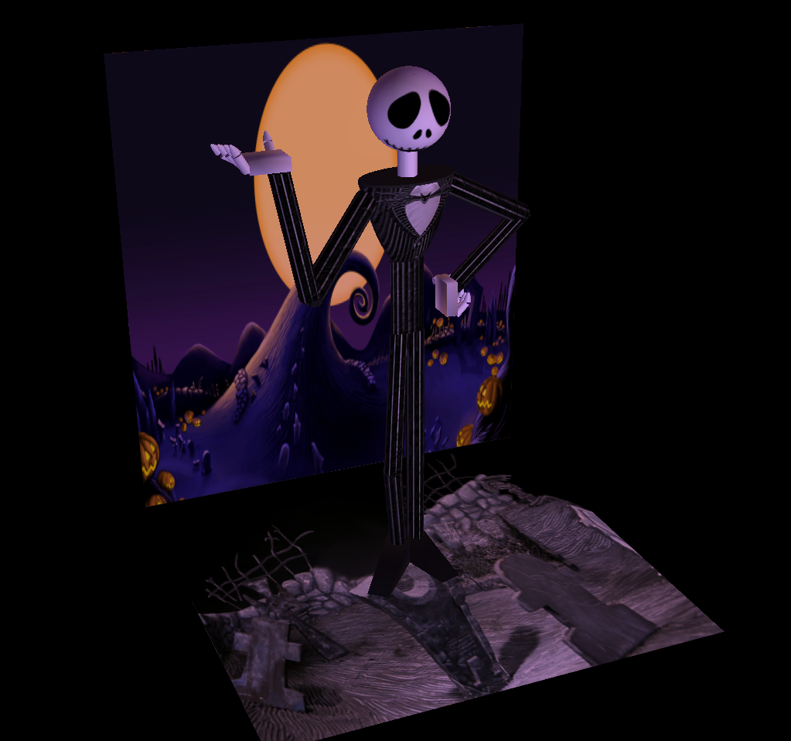

Jack Skellington 3D Model
 

In Fall Quarter 2020, I took a Geometric Computer Graphics Course, a class about programming and rendering computer graphics using C++ and OpenGL with a foundation in mathematics. Our professor gave us different coding projects every week, each depending on what we learned in class. For our final project, we were allowed to create anything of our choosing based on the concepts we learned in class, which would be graded on technical and artistic merit. For this, I thought it would be fun to create a 3D Model of Jack Skellington because I love The Nightmare Before Christmas.
Our professor wrote his own C++ files to render spheres and cylinders, so I used a sphere to create the head, and used cylinders for the arms, and positioned them into place. Then, I had to create my own geometries from scratch for the torso, the hands, and the feet. I created three new shapes, a remeshable paraboloid, a cube, and a triangular prism, each with their own set of normal vectors. For the torso I used one paraboloid, a cube for the palm, five fingers where each one had a cylinder and a paraboloid, and a triangular prism for each of the feet. I also added a floor and a wall for a nice backdrop.
Then, I had to add textures to the model. I found some images online: a transparent image of Jack's face and a Jack Skellington T-Shirt. I had to use GIMP to edit the T-Shirt remove the sleeves and the collar, and used the striped pattern to create a completely different image to map onto the arms. I also mapped 2 different backdrops onto the wall and floor.
For the lighting, I did something similar to the wall backdrop. I used a white light to brighten the scene first, then added a yellow backlight to resemble the moon's color in the wall, then added blue and purple lights from each of the sides. This was a lot of fun to make and got me wanting to learn more about computer graphics and create more projects. I really enjoyed programming to create something artistic.
Skills Used: C++, OpenGL, Visual Studio, GIMP